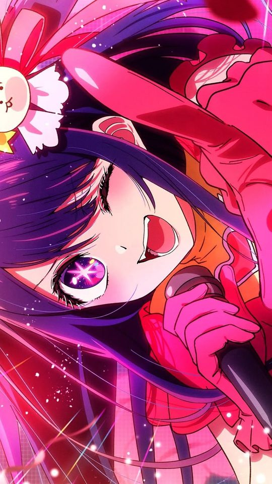
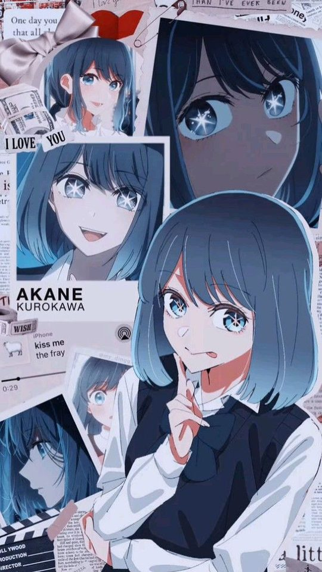
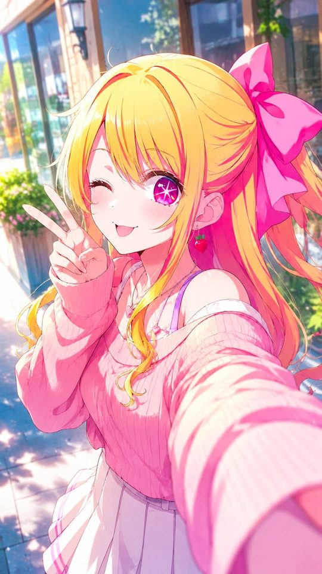
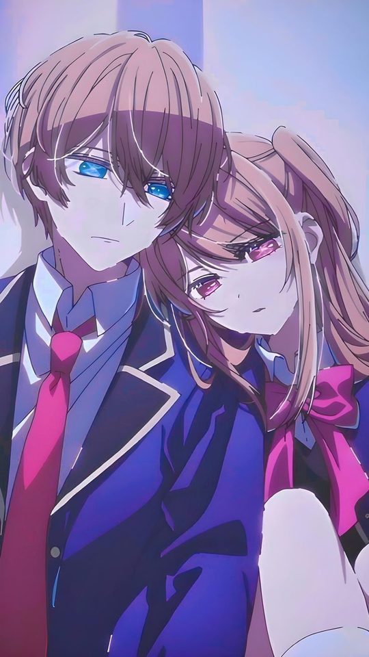

Anime Art Styles Explained: Cel-Shading, Digital Painting and AI Art
This guide explains the main art styles you will see in anime wallpapers, namely cel-shading, digital painting, watercolour and AI-generated work, and how to tell them apart. It also looks at which styles survive best as a phone wallpaper once they are cropped, scaled and viewed behind icons. By the end you will be able to name the style of almost any image you find.
Cel-shading
Cel-shading imitates traditional animation cels. Colour is applied in flat blocks with hard, clean edges between light and shadow, and a bold outline defines the character. There is little or no soft blending, so a shadow on the cheek is a distinct shape rather than a gradient. Cel-shaded art reads instantly and stays legible even when small, which is why it is the backbone of anime visuals.
You can identify it by looking for a sharp boundary where a lighter colour meets a darker one with no transition between them. The line art is usually a consistent thickness throughout.

Digital painting
Digital painting uses soft brushes and blended shading. Light falls gradually across a face, and there are no hard boundaries between tones. Skin has subtle gradients, fabric shows folds with soft shadow, and the outline may be absent or painted in a colour close to the surrounding area rather than a black line.
The tell is softness. Zoom in and the transitions stay smooth, and you never find a hard step between one shade and the next. Digital paintings often have richer, more realistic lighting than cel-shaded work, and they tend to be more detailed.

Watercolour
Watercolour-style anime art imitates the look of paint on paper. Colours bleed into one another, edges are soft and slightly irregular, and there is often visible texture or grain. Light areas may show the paper beneath, and colours are usually muted compared with digital painting.
You can spot it by the loose, uneven edges and the way one colour seeps into another. It feels lighter and airier than the other styles, and it rarely uses heavy black outlines.
AI-generated anime art
AI-generated images are produced by models trained on large collections of existing art. They can imitate any of the styles above, so they are identified less by overall look and more by specific errors.
- Hands and fingers: Too many fingers, merged fingers, or hands that melt into what they are holding are the classic signs.
- Eyes: Slightly mismatched pupils, or highlights that do not line up with any light source.
- Backgrounds: Detail that dissolves into meaningless shapes when you zoom in, patterns that look like text or objects but are not.
- Hair and fabric: Strands or folds that merge into each other or end for no reason.
- Symmetry: Earrings, clothing details or accessories that differ between the two sides of a character.
None of these prove an image is AI-made on their own, but two or three together are strong evidence.
It is worth noting that many real images mix two or more of these approaches. A single wallpaper might use cel-shaded character line art on top of a digitally painted background, which is common in promotional illustrations. When that happens, judge the part you care about most. If the character is the subject, use the rules for cel-shading; if the scene is the subject, use the rules for painting. You do not have to force an image into one box to decide whether it will work on your screen.

How to tell them apart at a glance
| Style | Edges | Shading | Outline |
|---|---|---|---|
| Cel-shading | Hard and clean | Flat blocks | Bold, consistent |
| Digital painting | Soft and blended | Gradual gradients | Faint or absent |
| Watercolour | Loose and uneven | Bleeding washes | Rare, soft |
| AI-generated | Varies by prompt | Often over-detailed | Varies, with errors |
The fastest check is to zoom in on one edge. A hard edge means cel-shading, a smooth edge means painting, and an irregular edge means watercolour.

Which styles hold up as a phone wallpaper
A wallpaper is viewed small, often behind icons, and frequently cropped. That favours styles with strong silhouettes and clear colour.
- Cel-shading works best. Bold outlines and flat colour stay readable even when the image is small or partly covered by icons.
- Digital painting works well if the subject is clearly lit and the background is not too busy. Fine detail is wasted behind the dock, so simpler compositions are better.
- Watercolour is the weakest choice. Soft, muted edges blur into the background and lose definition at wallpaper size.
- AI art is a gamble. Clean generations look fine, but visible errors such as extra fingers or mangled hands are distracting when you see them every day.
For a home screen that is always on, a cel-shaded image with a single strong subject is the most reliable choice.
Frequently asked questions
How can I tell if art is cel-shaded?
Look for a hard boundary between two shades of the same colour with no gradient between them, plus a bold, even outline. If shadows are distinct shapes rather than smooth blends, it is cel-shaded.
Is AI-generated anime art easy to spot?
Sometimes. Look at hands, eyes and background details. Extra or merged fingers, mismatched pupils and meaningless background textures are the most common giveaways. Clean AI images can be hard to distinguish from painted ones.
Which style is best for a phone wallpaper?
Cel-shading generally holds up best because its strong outlines and flat colours stay readable when the image is small and partly hidden behind icons. Digital painting is a close second if the composition is simple.
Is watercolour anime art good for wallpapers?
It can look attractive but tends to lose definition at phone size. Soft, muted edges blur together, especially behind a dock of icons, so it is usually less effective than a crisper style.